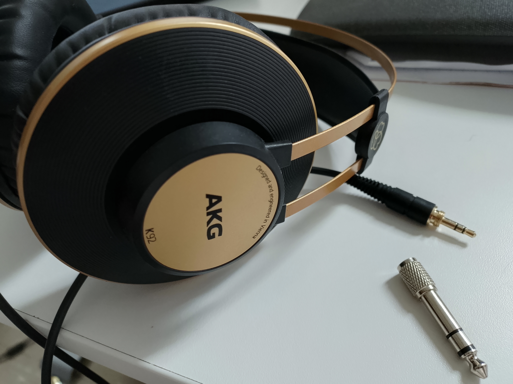

MEDIAART 2G03: Headphones
Headphone Criteria
Headphones are the essential "first piece of audio gear", central to your work in this course. With a core mechanism that consists of two cones pushed by electromagnets (also known as "drivers"), they allow an electrical signal of varying strength and direction to be turned into vibrating air molecules, very close to a person's ears. A good pair of headphones enables that translation from electricity to moving air to happen in a relatively "transparent" or "neutral" way, so that someone working on an audio project might hear the characteristics of what they are working on, rather than the characteristics of the headphones themselves or the distracting sounds of the environment in which they are working (although it is impossible to completely avoid at least some of this "interference").
For this course, you'll need to have a pair of headphones that meets all of the following requirements:
- full frequency range
- circumaural
- closed back (sometimes just labeled "closed")
- without active noise canceling (or with the ability to disactivate active noise canceling)
- with a standard wired audio cable to connect to computers, studio equipment, field recorders, etc
Although not technically requirements for our work in this course, I recommend also considering the durability of the headphones and how comfortable they are to wear during long work sessions. There are many headphones that meet all of these criteria, across a wide range of different prices. There are also many headphones that do NOT meet all of these criteria. If you don't have a pair that meets all the criteria, I urge you to invest in one that does - with some care it could be an investment that benefits you for many years and you'll be able to use them for things beyond this class as well.
In the rest of this module, we'll say a little bit more about what each of these criteria means and why they are important, and then conclude with some suggestions about how to find suitable headphones.
Full Frequency Range
The frequency range of the headphones should extend at least as low as 20 Hz and at least as high as 20 kHz (20,000 Hertz). That said, this will be true of almost any headphone in the above $50 range - and many cheap and nasty headphones will claim to have this frequency response. So while not having this range is definitely a red flag, claiming to have this range does not necessarily mean the headphones are great.
Circumaural
Circumaural headphones are headphones designed in such a way that they surround the entire ear (circum = around). With circumaural headphones, the headphone assemblage presses against the side of the skull and NOT against the flesh of the outer ear. They tend to be larger than all other headphone types, they tend to have more accurate reproduction of bass frequencies (accurate does not mean "more bass"), and they are usually more comfortable to wear during long work sessions. For these reasons, the circumaural headphone is usually preferred for detailed audio production work. Here's a photo of one circumaural (and closed, see below) pair of headphones, the AKG K92 headphones:

Other headphone forms are really meant for use in other contexts and settings. The supraaural headphone sits "on top of the ear", resting directly on the flesh of the outer ear. These types of headphones are somewhat more compact for transportation, and somewhat easier to take on and off (including taking off one ear), and so possibly their most iconic setting is use by DJs and other live audio performers. Because they are smaller they may have less accurate bass response, and because they sit directly on the outer ear, they may be less comfortable for long work sessions.
The humble ear-bud is made to prioritize compactness and use in portable settings, while commuting, etc. Many compromises are made to get something that can fit slightly inside (or just outside of) the ear canal. It's fine to use a set of ear-buds until you get something more suitable, but for the most part ear-buds are meant for the consumption rather than the production of audio.
Closed back
Circumaural headphones come in two variants: open back and closed back - sometimes just called "open" and "closed". This criterion refers to the nature of the material on the outside or back of the headphone cup or cone. In an open headphone, there isn't much material between the inside of the cup and the outside world - this allows somewhat more neutral presentation of some sounds (particularly bass sounds) at the cost of there being more "bleed" of sound from the outside world into the ears of the headphone wearer, and also more bleed in the other direction (from the headphone out into the world).
With closed headphones, by contrast, the outside or back of the headphone cup contains a certain amount of sound insulating material. Much less sound from the outside world reaches the ears of the headphone wearer, and much less sound from the headphones reaches the outside world. Closed headphones are to preferred in environments where we are working alongside others who may be making noise and/or who do not wish to be exposed to the noises we are making - such as in our tutorial sessions in this class. Ultimately, people who are serious about audio production will probably want to have both types at their disposal, so that they can use whichever one best fits the situation. The closed design is definitely the best place to start for a first serious pair of headphones, though. Without active noise canceling
Active noise cancellation systems work by introducing an additional signal into the ear that is calculated to cancel out the effects of certain (generally loud, major) sources of environmental noise (airplane cabins, subways and buses, etc). This is definitely modifying the sound signal (so not "neutral") - and in some cases where you are not in an excessively noisy environment, the modification can even become an audible noise that distracts from paying attention to the sounds you are working on.
While active noise canceling may be a bad idea for when you're doing sound work, they are a very good idea for listening "on the go". When people don't have active noise canceling in their "on the go" entertainment systems they may be tempted to turn up the gain or "volume" on their audio devices in order to drown out city/vehicle noise - leading to an increased likelihood of ear damage. Conversely, active noise canceling systems will tend to lead people to reduce the overall level, and thus preserve more of their hearing as the years pass.
So, for our work in this course, if a pair of headphones does have active noise canceling, it is important to confirm that this feature can be completely turned off.
As a further note, sometimes you will encounter headphones that have what I would call "high passive noise attenuation", for example by virtue of having a closed design with particularly strong sound insulation characteristics. That is not the same thing as active noise canceling and is perfectly fine for detailed audio work. Sometimes it can be confusing to parse marketing statements about active or passive noise cancelation - you are encouraged to reach out to me (Dr. 0) with questions if something is unclear about a model you are considering buying!
Standard wired audio cable
A standard wired audio cable connects the headphones to wherever the sounds are "coming from" via three pieces of metal. Usually such cables have a connector on the end with three metal regions visible, and a radius of 1/8 inch. An adapter allows this 1/8 inch connector to be turned into an equivalent 1/4 inch connector, since the larger size is common on professional audio gear (and way, way more robust and durable).
This simple, time-tested way of connecting headphones to the source of a sound signal is preferable to other methods for many reasons:
- It is a long established standard that does not belong to any company or individual
- There is an enormous amount of professional audio gear that expects either the 1/8 inch connector or the larger, equivalent 1/4 inch connector (including the gear in McMaster's surround sound studio and the Media Arts program's equipment bank)
- The response of the headphone to a signal on such a cable is effectively instantaneous (which is not true when the connection between headphone and device is digital)
- We can be highly confident that no alterations are being made to the signal in order to help transmit it (e.g. by contrast to some wireless headphones)
Some wireless headphones allow for a standard wired connection as well. That is fine.
How To Buy Headphones
Here are some recommended brands that make headphones meeting all of the above criteria. These are brands that have traditionally been used by audio professionals and so relatively little of the money you spend on the headphone goes into fashion, marketing, etc. They tend to be simple and relatively robust devices that "get audio work done". In alphabetical order:
- AKG
- Audio Technica
- Beyerdynamic
- Sennheiser
- Sony
Note that there are certainly suitable headphones made by other brands, and note also that the above companies make many different kinds of headphones, so you'll still need to pay attention to the criteria explained above.
There are many places to buy suitable headphones. Stores specializing in music and musical instruments will often have many highly suitable models, and may have stands that let you try different pairs of headphones on.
A final note: don't worry if you don't have these right away for your first one or two tutorials. Bring whatever you have at first (ear-buds, whatever) and then plan to upgrade to something more suitable for serious audio work as soon as is feasible.
Happy listening!